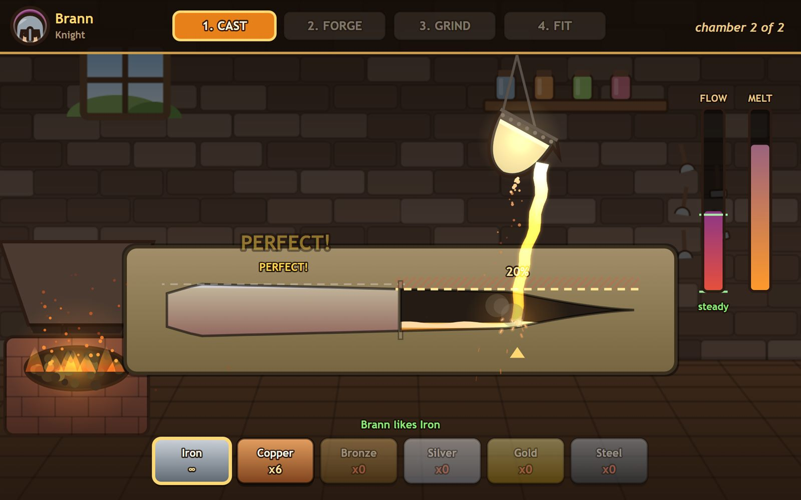
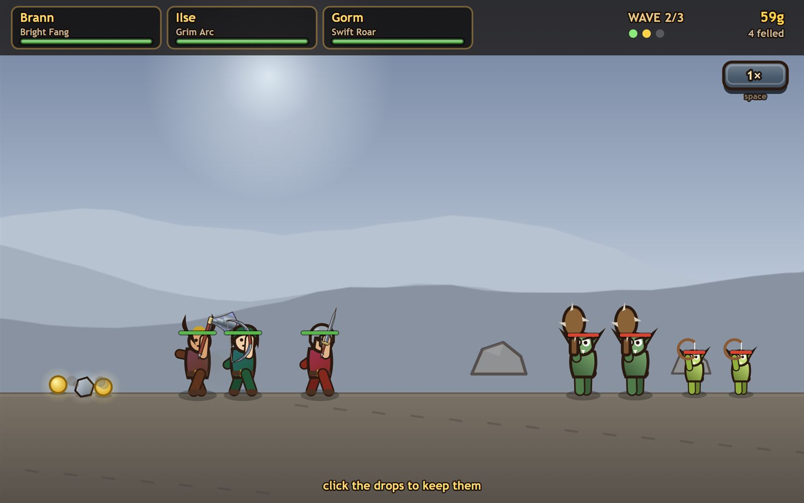

- Every sprite is drawn in code with 2D path commands and every sound is synthesised with WebAudio at runtime. There are no asset files in the repository.
- One mould silhouette drives everything. The same pair of edge functions defines the pour, the anvil, the grindstone and the blade on the battlefield, so a bad cast is visibly a thinner blade later.
- Four craft stages, each its own skill: cast, forge, grind, fit. Pour too hard and you fold air into the metal; dawdle and the melt sets porous anyway.
- Squads auto-fight three waves with the weapons you made, and you are graded on who came home.
- Ships with a dev harness that steps the game frame by frame and captures the canvas, which is how every screenshot on this page was taken.

